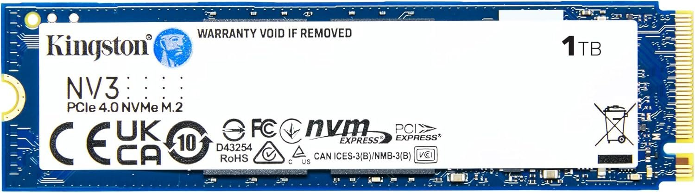
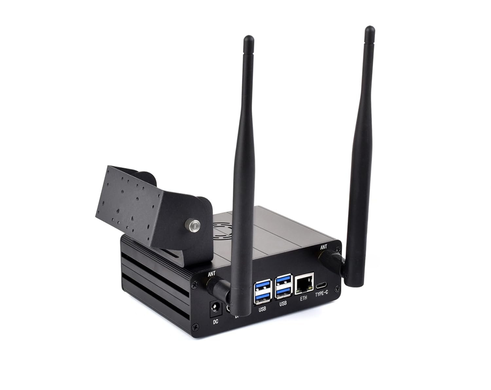
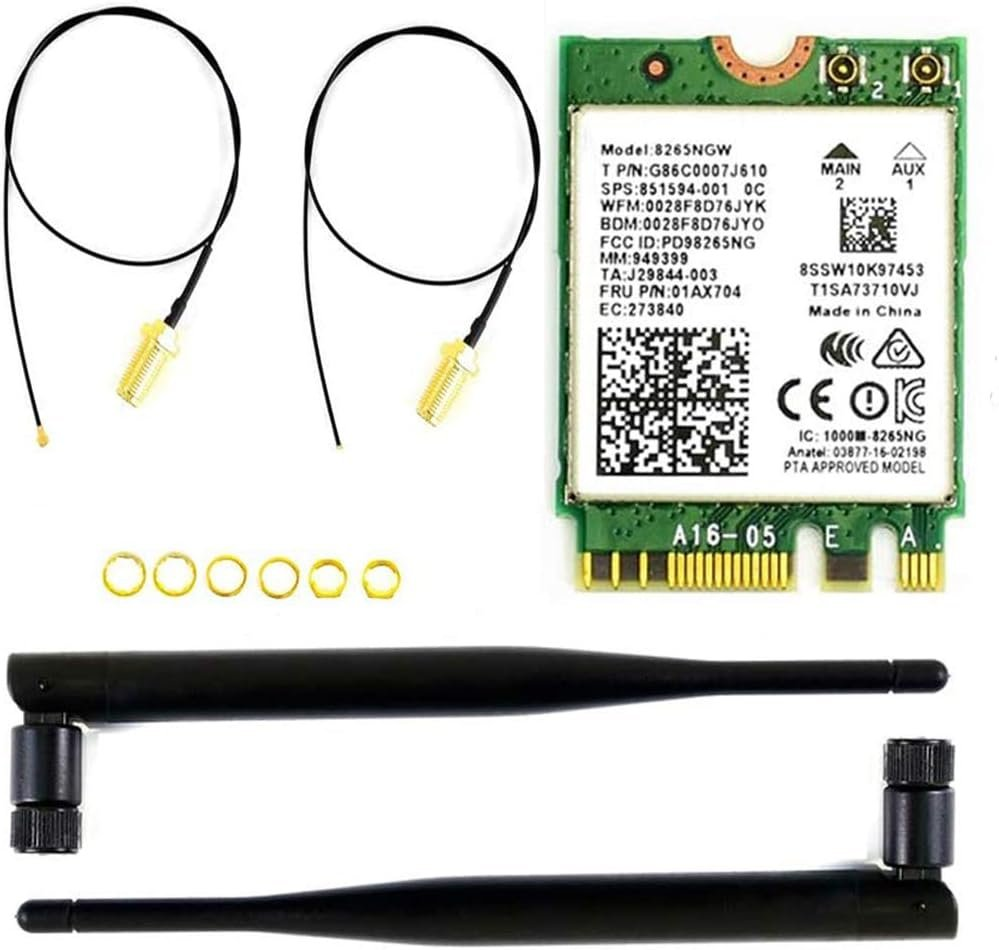
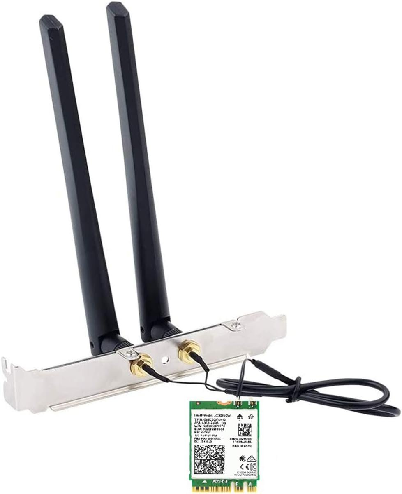

What this guide is, and isn’t.
There are roughly a thousand Jetson tutorials on the internet. Most of them are stale — written for older JetPack versions, copy-pasted commands without explanation, or stop at the moment Ubuntu boots and call it a day. This is not that.
This is a chronological field report from setting up a real Jetson Orin Nano Super (8 GB) for serious robotics and AI work. Every command you'll see here was actually run on real hardware. Every error addressed is one I actually hit. The order is the order I actually did things in — including the parts where I had to back up and try again, because that's the honest experience.
By the end of this guide, you'll have:
- A clean, current JetPack 6.2.x install on a microSD
- A 1 TB NVMe SSD partitioned, formatted, and auto-mounted
- An 8 GB swapfile on the NVMe in addition to the default zram
- Docker with its data root on NVMe and the NVIDIA runtime as default, so containers see the GPU automatically
- A working web browser that doesn't fight you (Firefox installed directly from Mozilla, bypassing snap)
- An understanding of why every step matters, not just what to type
This guide assumes you're comfortable opening a terminal and running commands. You don't need to be a Linux expert — I'll explain what each piece does — but I'm not going to teach you what cd means. If you've ever SSH'd into a Raspberry Pi, you're qualified.
Hardware checklist before you start.
Before flashing anything, make sure you have everything in front of you. Skipping ahead with missing pieces leads to half-finished setups and reboots-from-the-wrong-USB-port that waste an hour.
Here's the kit I used. Every piece earned its place; nothing on this list is incidental.
Orin Nano Super Dev Kit
The 8 GB version. NVIDIA's official board with 67 TOPS of AI performance. Make sure firmware is at least r36.
View on Amazon
1 TB NVMe (Kingston NV3)
PCIe 4.0 NVMe in M.2 2280. The single most impactful upgrade you can make. Cheap, fast, plug-and-play.

Aluminum Case w/ Antennas
Power button, SMA antenna mounts, camera holder, and dramatically better thermals than bare board.
View on Amazon
Intel AC 8265 Wi-Fi
The boring, reliable choice. Plug-and-play on JetPack 6. Skip the AX210 — its driver doesn't compile cleanly on Tegra.
Also needed
- microSD card, 64 GB or larger, U3/A2 class — the OS lives here. SanDisk Extreme Pro and Samsung Pro Plus are reliable.
- USB-C power supply, 5 V × 5 A (25 W minimum) — the official NVIDIA brick or any quality 27 W+ USB-C PD adapter. Phone chargers brown out under load.
- HDMI or DisplayPort monitor. The carrier board has DP native; HDMI requires a passive DP→HDMI adapter.
- Wired USB keyboard & mouse. More on this later — wireless dongles can cause boot issues.
- Ethernet cable for initial setup. Wi-Fi may or may not work out of the box depending on your card.
The Intel AX210 (Wi-Fi 6E) is a great card on x86 laptops — but on JetPack 6's NVIDIA-modified Tegra kernel, the iwlwifi driver isn't included, and compiling the backport fails because of kernel-API mismatches. If your case kit ships with an AX210, set it aside for a future PC build and order an AC 8265 instead. I have the bricked compile logs to prove it.
Flashing JetPack and the first-boot wizard.
Download the JetPack 6.2.x image from NVIDIA's official Get Started page. Pick the Jetson Orin Nano Developer Kit SD Card image — not the one for the older Jetson Nano (different product, confusingly).
If you'd rather watch someone else do it first — entirely reasonable — the official walkthrough video from NVIDIA is the canonical reference:
Flash to your microSD using Balena Etcher or the equivalent. Etcher is dead-simple: select image, select drive, click Flash. Verify the write when prompted — bad SD writes cause weird kernel panics on first boot that look like hardware faults but aren't.
Insert the SD card and connect peripherals
Slot the microSD into the underside of the Orin module. Connect display, keyboard, mouse, Ethernet, and power last. The board boots immediately when power is connected — there's no power button by default.
Walk through the Ubuntu first-boot wizard
You'll be asked for keyboard layout, Wi-Fi (or skip and use Ethernet), timezone, and to create a user. Pick the same username everywhere — it'll be your shell prompt, your home directory, and your Docker group identity. I used majid with hostname majid-desktop.
When prompted for the APP partition size, take the default (the maximum). The microSD is your OS drive; you don't need to leave room for anything else there.
Verify firmware version
After the desktop loads, open a terminal (Activities → search "Terminal" → Enter) and run:
cat /etc/nv_tegra_release
You're looking for a line that starts with R36. If it says R35, your firmware is from JetPack 5 and you'll need to run a firmware update via apt before continuing. Most boards shipped after late 2024 are already on R36.
The USB peripheral trap, or: why your board won’t boot.
The single weirdest issue I ran into during setup wasn't software at all. It was a 2.4 GHz USB dongle for an off-brand wireless keyboard.
Symptom: the board would boot, the fan would not spin up, and the display would show vertical color-bar corruption that looked like a dying GPU. Power-cycling didn't help. Different SD card, same issue.
Cause: the cheap dongle apparently glitched the USB hub during initialization, and the Orin Nano is dramatically more sensitive to flaky USB devices during boot than a desktop PC is. Removing the dongle and connecting a wired keyboard fixed everything immediately. The fan spun, the display worked, and Ubuntu booted normally.
The lesson: when the Jetson does something inexplicable, your first three debugging steps are (1) pull all USB peripherals, (2) try a wired keyboard, (3) try a different USB port (the lower ports route through a different controller). Save yourself an hour.
Installing the case, power button, and Wi-Fi card.
Aftermarket cases for the Orin Nano are roughly $30 and worth every cent. They give you a power button (the bare board has none), better thermals, mounting points for SMA antennas, and the ability to actually use the thing on your desk without a fan tower trying to throw itself off the table.
Power button wiring
The carrier board exposes a header labeled J14 with several pins for power button, LED, and reset. Most cases route four wires: power button (to the PWR BTN and GND pins) and an LED (LED+ and LED−).
There's also a jumper labeled AUTO_ON / DIS that determines boot behavior. With the jumper installed, the board powers on automatically when external power is supplied (the default behavior). Remove or move the jumper to require a manual button press to start. Pick whichever matches your workflow; I left mine on auto-on for now.
NVMe install
The M.2 Key M slot for NVMe is on the bottom of the carrier board, under the module. Use the included standoff and screw. The slot supports both 2230 and 2280 form factors.
Wi-Fi card
The M.2 Key E slot for Wi-Fi is on top of the carrier board. Drop the card in, secure with the included screw, and route the two u.FL antenna cables out through the case to your external SMA-mounted antennas.

wlan0 on first boot. This is the right answer.If you're using an Intel AC 8265: you're done. JetPack 6.2 includes iwlwifi support out of the box for this chipset, and the card will appear as wlan0 on first boot. Connect via GNOME settings or via nmcli.
If you're using anything else (AX210, MediaTek, etc.): expect to do extra work. Sometimes hours of extra work, sometimes a clean failure that forces you to use a different card. The Tegra kernel does not include the same driver matrix as a stock Ubuntu kernel.
For a more visual walk-through of unboxing, case assembly, and the initial bring-up, this community video is genuinely good:
Setting up the NVMe from scratch.
This is the most impactful part of the setup. The microSD is fine for the OS, but it's slow (60–100 MB/s typical), it wears out under heavy writes, and it's only 64–128 GB. AI/ML container images alone can be 8–15 GB each. You want a real SSD.
The plan: partition the entire NVMe as a single ext4 filesystem, mount it at /mnt/nvme, give your user ownership of it, and add an entry to /etc/fstab so it auto-mounts at every boot.
Step 1: Confirm the kernel sees the drive
lsblk
You should see a line like nvme0n1 259:0 0 931.5G 0 disk. The "p1" suffix won't be there yet because we haven't partitioned it. If the device doesn't appear at all, reseat the card; the M.2 connector seats a hair more firmly than feels right.
Step 2: Create a GPT partition table and one big partition
sudo parted /dev/nvme0n1 --script mklabel gpt sudo parted /dev/nvme0n1 --script mkpart primary ext4 0% 100%
The first command wipes any existing partition table and creates a fresh GPT one. The second creates a single partition that spans the entire disk. The --script flag prevents parted from prompting interactively, and the 0% and 100% values let it pick optimal alignment automatically.
Step 3: Format as ext4
sudo mkfs.ext4 -L jetson-nvme /dev/nvme0n1p1
ext4 is the boring, correct choice for Linux storage. The -L jetson-nvme flag sets a friendly label that shows up in lsblk -f output. Note the new UUID printed by mkfs — you'll need it in the next step.
Step 4: Create the mount point and add to fstab
sudo mkdir -p /mnt/nvme sudo blkid /dev/nvme0n1p1 # note the UUID it prints # Append a line to /etc/fstab using the UUID from above: echo "UUID=YOUR-UUID-HERE /mnt/nvme ext4 defaults,noatime,nofail 0 2" | sudo tee -a /etc/fstab sudo mount -a sudo chown -R $USER:$USER /mnt/nvme
Anatomy of an fstab line: source, mountpoint, filesystem type, options, dump flag, fsck order. The noatime option skips writing access timestamps on every read — faster, less SSD wear. The nofail option prevents the system from refusing to boot if the drive is missing for some reason; valuable for development hardware.
Verify with df -h /mnt/nvme. You should see ~916 GB available on a 1 TB drive (the difference is filesystem overhead and reserved blocks).
An 8 GB swapfile on NVMe.
JetPack ships with six 635 MB zram swap blocks active by default — about 3.8 GB of compressed swap that lives in RAM. zram is great for normal use because compressed pages are still ~50× faster than disk swap, but it has a fundamental limit: when you run out of physical RAM, zram has nowhere to evict to. It's RAM all the way down.
For AI workloads — running models bigger than 8 GB, training a small network, working with large datasets — you want real swap on real disk as overflow. Eight gigabytes is the sweet spot. More just wastes SSD space; less and you'll OOM-kill your training job at 90% complete.
sudo fallocate -l 8G /mnt/nvme/swapfile sudo chmod 600 /mnt/nvme/swapfile sudo mkswap /mnt/nvme/swapfile sudo swapon /mnt/nvme/swapfile # Make it persistent across reboots: echo "/mnt/nvme/swapfile none swap sw 0 0" | sudo tee -a /etc/fstab
The chmod 600 step is mandatory, not cosmetic. The mkswap command refuses to format a file that's readable by anyone other than its owner — a security check to prevent your swap (which contains decrypted memory pages) from leaking to other users.
Verify with swapon --show and free -h. You should see your new 8 GB file alongside the six zram entries, and your total swap should jump to about 11 GB.
Linux uses higher-priority swap first. zram is priority 5, your file is priority −2, so normal pressure goes to fast in-RAM compressed swap, and only when zram fills up does Linux fall back to your NVMe file. You get the speed of zram for everyday work and the headroom of disk swap for the AI moments where it matters.
Moving Docker to NVMe and enabling GPU access.
By default, Docker stores its images, containers, volumes, and build cache under /var/lib/docker — which lives on your microSD. AI/ML container images are huge; a single PyTorch + CUDA image can be 8 to 15 GB. You'll fill the SD card with three pulls. We're going to relocate Docker's data root to the NVMe and, while we're there, configure the NVIDIA container runtime as the default so containers automatically see the GPU.
Step 1: Stop Docker cleanly
sudo systemctl stop docker sudo systemctl stop docker.socket sudo systemctl stop containerd
Docker, its socket activator, and its underlying container runtime all need to be down. Otherwise file moves and config changes can corrupt the metadata DB.
Step 2: Write the new Docker daemon config
JetPack pre-configures the NVIDIA runtime in /etc/docker/daemon.json, but doesn't make it the default. We need to add two new keys: data-root (where Docker stores its files) and default-runtime (so containers get GPU access without needing --runtime=nvidia on every command).
sudo tee /etc/docker/daemon.json > /dev/null <<'EOF' { "runtimes": { "nvidia": { "args": [], "path": "nvidia-container-runtime" } }, "default-runtime": "nvidia", "data-root": "/mnt/nvme/docker" } EOF
The heredoc syntax (<<'EOF' ... EOF) lets us write the entire JSON block atomically without nano-induced typos. JSON is strict about commas; the file above is the exact correct shape.
Step 3: Move existing Docker data
sudo mkdir -p /mnt/nvme/docker sudo rsync -aP /var/lib/docker/ /mnt/nvme/docker/ sudo mv /var/lib/docker /var/lib/docker.old
rsync -a preserves permissions, ownership, timestamps, and symbolic links exactly. -P shows progress and supports resuming. The trailing slash on the source path means "copy the contents of this directory" rather than "copy this directory." We rename the old directory to .old instead of deleting it; once we've verified the move worked, we can remove it later.
Step 4: Start Docker, add yourself to the group, test
sudo systemctl start docker sudo usermod -aG docker $USER newgrp docker docker info | grep -iE "docker root|runtime" docker run --rm hello-world
The usermod -aG docker step is what lets you run docker commands without sudo. The -a means "append to groups" — without it, you'd replace all your existing groups with just "docker" and lock yourself out of sudo. Don't ever forget the -a.
newgrp docker activates the new group in your current shell session immediately. Logging out and back in does the same thing more permanently for all future shells.
Step 5: The real test — GPU passthrough
docker run --rm nvcr.io/nvidia/l4t-base:r36.2.0 nvidia-smi
This pulls NVIDIA's official L4T base image (~700 MB) and runs nvidia-smi inside it. We don't need to pass --runtime=nvidia because we set it as the default. If you see a table with Orin (nvgpu) listed and a CUDA version, you're done. The whole stack — Docker on NVMe, NVIDIA runtime, GPU exposure to containers — is working end to end.
Don't be alarmed when the table shows N/A for fan speed, temperature, power draw, and memory. nvidia-smi was designed for discrete desktop and datacenter GPUs with separate VRAM and dedicated sensors. The Jetson is a unified-memory SoC — the GPU shares system RAM with the CPU and there's no separate fan tied to just the GPU. To monitor properly, install jetson-stats and use jtop; that tool understands the SoC architecture and reports real numbers.
Installing Firefox without snap.
JetPack ships with a broken Chromium snap (the icon's there, but the binary is missing) and Ubuntu 22.04's apt install firefox tries to install Firefox via the snap store. On many networks — and from many regions — the snap store endpoint api.snapcraft.io is unreachable. You'll get cryptic timeout errors during a routine apt run.
The cleanest solution is to skip snap entirely and install Firefox directly from Mozilla's official tarball. Mozilla's CDN is hosted on completely different infrastructure and is reachable nearly everywhere.
# Remove the broken transitional snap shim if it's installed sudo apt remove --purge firefox -y sudo apt autoremove -y # Download the official ARM64 build directly from Mozilla cd ~ wget --output-document=firefox.tar.xz "https://download.mozilla.org/?product=firefox-latest-ssl&os=linux64-aarch64&lang=en-US" # Extract to /opt and symlink into PATH sudo tar -xJf firefox.tar.xz -C /opt/ sudo ln -sf /opt/firefox/firefox /usr/local/bin/firefox # Add a desktop launcher sudo tee /usr/share/applications/firefox.desktop > /dev/null <<'EOF' [Desktop Entry] Name=Firefox Comment=Web Browser Exec=/opt/firefox/firefox %u Terminal=false Type=Application Icon=/opt/firefox/browser/chrome/icons/default/default128.png Categories=Network;WebBrowser; StartupWMClass=firefox EOF sudo update-desktop-database firefox --version firefox &
The Firefox you get this way is the official Mozilla build, identical to what you'd download on any other platform. It self-updates from Mozilla's update servers (no apt involved), so you'll never have to repeat this process. Your profile lives at ~/.mozilla/firefox/ exactly like every other Linux Firefox installation.
Don't forget to clean up the tarball when you're done: rm ~/firefox.tar.xz.
What you have at the end.
If you've followed along, here's the state of your machine:
| Component | Configuration |
|---|---|
| OS | JetPack 6.2.x on microSD, 916 GB ext4 on NVMe at /mnt/nvme |
| Swap | 3.8 GB zram + 8 GB file on NVMe = ~11 GB total |
| Docker | Data root on NVMe; nvidia runtime as default |
| GPU access | CUDA 12.6 visible inside any container automatically |
| Browser | Native Firefox from Mozilla, self-updating |
| User | In docker, sudo, video, gpio, i2c groups |
You're now ready to pull AI/ML containers from NGC, build robotics applications with GPU acceleration, and treat the Jetson as a serious development platform rather than a hobby toy.
Two things still worth doing
Switch to MAXN SUPER power mode. Click the NVIDIA icon in the top bar (the green eye) → Power Mode → MAXN SUPER. The default 25 W mode caps the GPU; MAXN unlocks the full 67 TOPS the chip is rated for. Worth doing only when actually running heavy workloads — it draws more power and the case will get warm.
Install jtop for proper monitoring.
sudo apt install -y python3-pip sudo pip3 install -U jetson-stats sudo reboot # after reboot: jtop
jtop understands the Tegra SoC architecture properly and shows you live CPU/GPU/memory utilization, power rails, fan speeds, and hardware sensor data that nvidia-smi can't surface. Treat it as your default monitoring tool from now on.
Pitfalls and lessons.
Things I learned the hard way, so you don't have to:
- Pull every USB peripheral when debugging boot issues. Cheap dongles can poison the boot process in ways that look like hardware failure.
- Use UUIDs in fstab, not device names.
/dev/nvme0n1p1can change order if you ever add another drive; UUIDs are stable. - Always include
nofailin fstab entries for non-root drives. Without it, a missing or failed drive will refuse to boot the system, leaving you at an emergency shell. - Don't use
sudoin front of redirects.sudo echo x > /etc/somefiledoesn't work; the redirect is performed by your unprivileged shell. Useecho x | sudo tee /etc/somefileinstead. - The
-ainusermod -aGis mandatory. Without it, you replace all your existing groups with just the new one — locking yourself out of sudo. I cannot stress this enough. - Verify JSON config files before restarting daemons. A single misplaced comma in
/etc/docker/daemon.jsonwill make Docker fail to start with a useless error. Test withpython3 -c "import json; json.load(open('/etc/docker/daemon.json'))"beforesystemctl start. - Heredocs (
<<'EOF') beat nano for config files. They're atomic, reproducible, and work the same way every time. - Skip Wi-Fi cards that aren't AC 8265. The AX210, MediaTek, and various other "great on laptops" cards have driver problems on Tegra. Save yourself an evening of compile errors.
- If apt drags in snapd as a dependency, that package is a snap shim. Find another install method (PPA, vendor tarball, AppImage). Direct vendor tarballs are usually fastest.
- Read error messages slowly. Linux is verbose, but it's almost always telling you exactly what's wrong. The fix is in the message 80% of the time.
That's all. The Jetson is a tremendous piece of hardware once you've gotten past the on-ramp; the on-ramp is just steeper than it should be. With the setup above, you've cleared it. Now go build something.
References & further reading.
If you want to dig deeper, these are the resources I trust. Official sources first, community ones below.
-
Docs
NVIDIA · Get Started with Jetson Orin Nano Developer Kit
The official getting-started page from NVIDIA. Image downloads, hardware overview, and the canonical first-boot procedure. Always start here.
-
Docs
Jetson AI Lab · Initial Setup Tutorial
Community-maintained reference covering JetPack flashing, NVMe migration, and the AI-specific setup steps. More current than most third-party guides — updated alongside JetPack releases.
-
Video
NVIDIA · Jetson Orin Nano Developer Kit Setup Walkthrough
The official video companion to the get-started guide. Watch this if you prefer seeing each step before doing it.
-
Video
Community Hands-On · Jetson Orin Nano Super
A maker-perspective walkthrough of unboxing through first boot. Good for the case-assembly and antenna-routing parts that the official video doesn't cover.
-
Shop
Jetson Orin Nano Super Developer Kit · Amazon
The 8 GB version of the dev kit. Confirm the firmware revision when it arrives — you want r36 or newer.
-
Shop
Aluminum Alloy Case for Jetson Orin · Amazon
Camera holder, Wi-Fi antenna mounts, accessible USB/Ethernet/Type-C ports. The case I used for this guide.